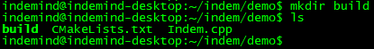
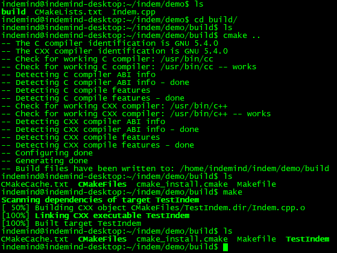

Ubuntu SDK安装¶
注解
安装必须硬件和软件 需要显卡Geforce GTX 1050 以上，并且把显卡驱动安装好，CUDA版本9.0。没有GPU，如深度解算等功能无法正常运行。
程序下载¶
小技巧
下载完解压出以下文件：
SDK主要包含：demo，doc，include、lib四个文件夹。
demo文件夹下放置的是DEMO程序；
doc文件夹下放置的是说明文档；
include文件夹下面放置的是需要用到的头文件；
lib包括Ubuntu 1604和Ubuntu 1804系统库文件，库文件夹下放置的是所依赖的各部分的链接文件.so与.a文件以及配置所用的.yaml与.json文件；

编译Demo¶
小技巧
编译前的准备
a）安装cmake
b）安装google-glog + gflags
c）安装BLAS & LAPACK
d）安装SuiteSparse and CXSparse
e）编译器
使用Ubuntu 16.04编译demo程序需要使用GCC5.4版本，否则可能链接失败。 使用Ubuntu 18.04编译demo程序需要使用GCC7.3版本，否则可能链接失败。
编译demo
解压后的文件在Linux上显示如下：

现以在Ubuntu 16.04上使用GCC5.4编译demo为例，操作如下：
通过命令行进入demo目录里面使用命令mkdir build 创建一个build目录，用来放编译demo程序。
进入build目录
编译demo，操作截图如下：
执行demo程序¶
把刚才编译的可执行文件TestIndem拷贝到刚才解压SDK的lib目录下的1604目录下，在lib/1604目录下使用 sudo ./TestIndem.sh 命令启动程序。
为了减少手动拷贝操作，TestIndem.sh里有自动拷贝TestIndem到lib/1604目录的脚本，demo和lib的目录关系不要轻易改变，否则脚本失效。
TestIndem和TestIndem.sh 需要可执行权限。 使用命令chmod 777 TestIndem 和chmod 777 TestIndem.sh 进行修改。
为了提高系统稳定性，请运行时使用超级用户（root权限）运行，或者使用 “sudo ./程序名” 运行，例如DEMO运行“sudo ./TestIndem.sh”。
如果用户需要自己写demo程序，请参照此demo，把CMakeLists.txt写好就可以进行编译。
用户基于SDK开发的程序，参考demo操作流程。
如果用户自定义生成demo的可执行文件的名字，还需要在TestIndem.sh里用其替换掉TestIndem。
警告
在Ubuntu 18.04上使用GCC7.3编译demo的时候，需要把demo里的CMakeLists.txt的1604改成1804才能编译成功，编译成功后把TestIndem拷贝到lib/1804下运行。